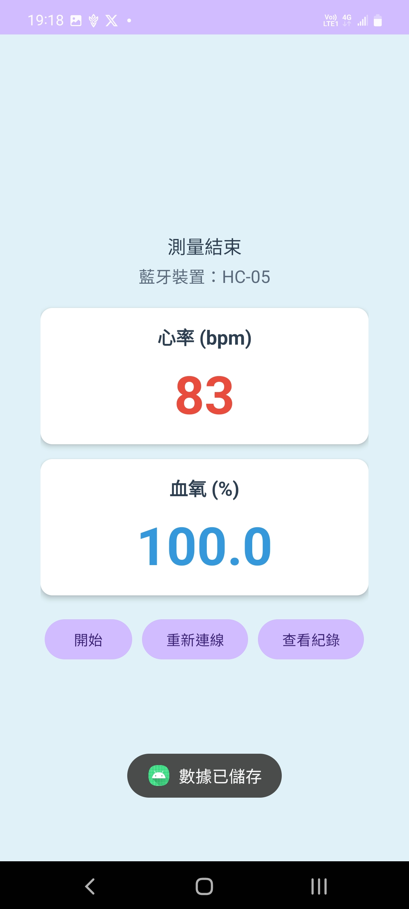

×
專題：血氧偵測軟體


這是我們使用JavaScript所開發的血氧偵測軟體。
它能夠透過藍芽連線到血氧機，測量時可以在手機中即時顯示並記錄追蹤數據。
設計的初衷是希望能讓大家在家裡能夠簡易的紀錄、追蹤身體的健康狀態。
如果對此軟體有興趣，也歡迎下載檔案並協助我們做更多的更新。
下載 APK 檔案大家好！我是進四子四甲的學生。
這是我的網路應用程式設計的個人介紹頁。
姓名：黃于忠
學號：C111252124
科系：電子系
我的興趣是打遊戲，什麼類型都玩。
同時正在學習軟體相關的編譯，主要學習的語言如下
Email: C111252124@nkust.edu.tw
這是我們使用JavaScript所開發的血氧偵測軟體。
它能夠透過藍芽連線到血氧機，測量時可以在手機中即時顯示並記錄追蹤數據。
設計的初衷是希望能讓大家在家裡能夠簡易的紀錄、追蹤身體的健康狀態。
如果對此軟體有興趣，也歡迎下載檔案並協助我們做更多的更新。
下載 APK 檔案